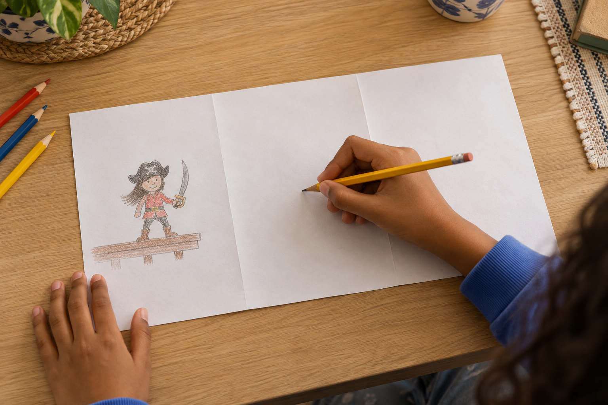
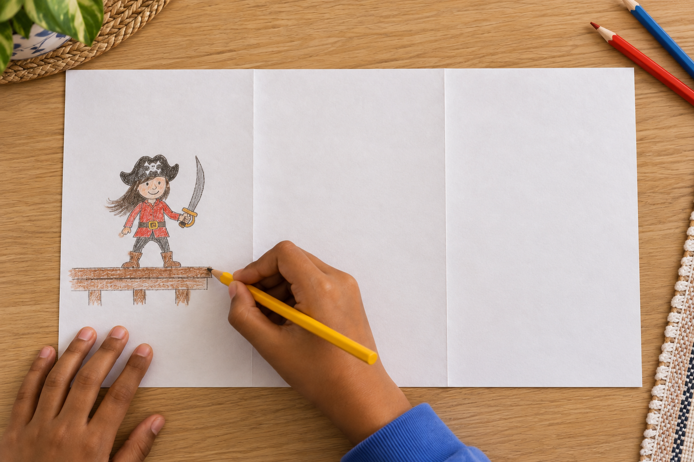
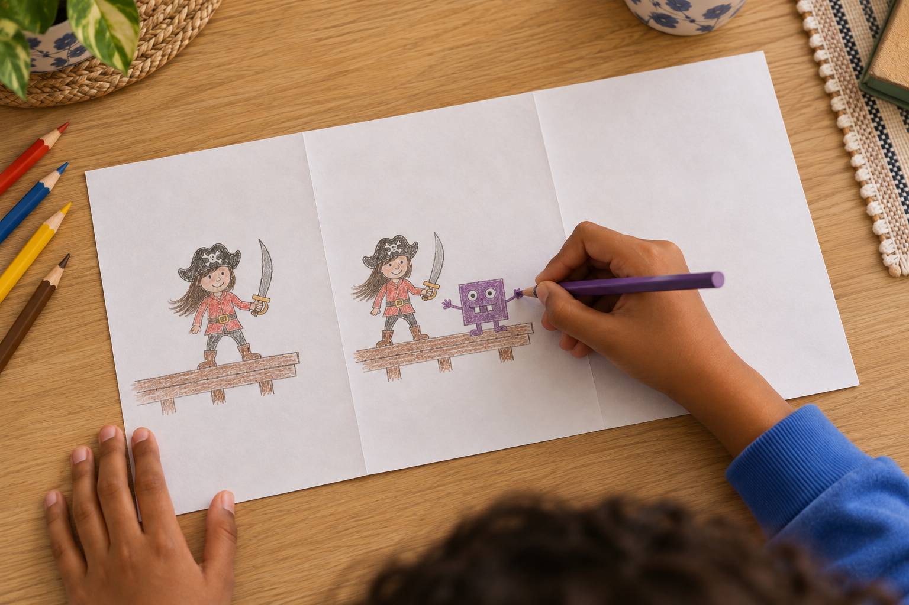
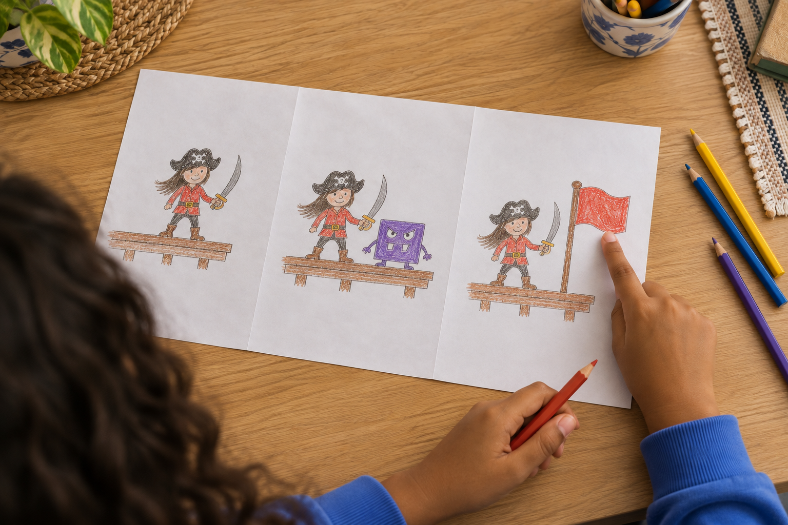
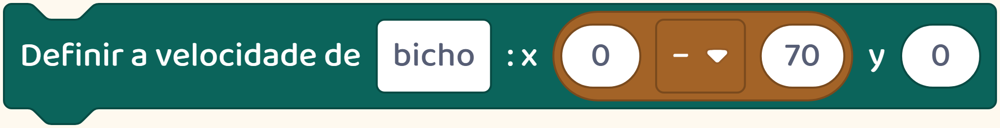
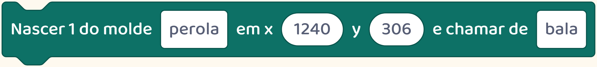
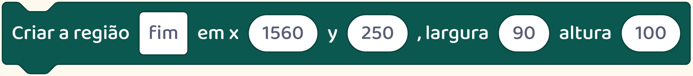
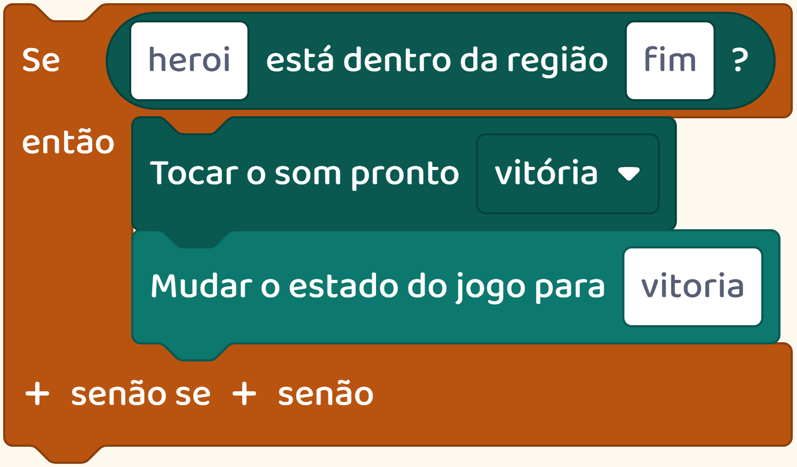
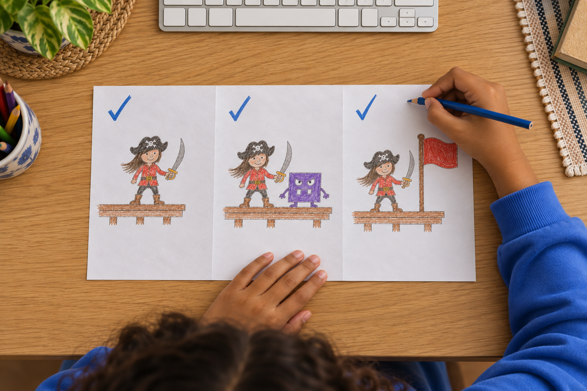

Por trás do jogo
Seu filho tem uma ideia enorme de jogo.
Três desenhos podem ajudar a escolher por onde começar.

Seu filho tem uma ideia enorme de jogo.
Três desenhos podem ajudar a escolher por onde começar.

Dividam uma folha em três partes.

Na primeira, ele desenha onde o personagem começa.
Na segunda, desenha o que o personagem encontra pelo caminho.

Peça para escolher um desafio: desviar de um inimigo, alcançar uma plataforma ou abrir uma porta.
Na terceira, desenha a chegada.

O que o jogador precisa fazer para vencer? Essa resposta ajuda a definir o objetivo do jogo.
Veja esta fase de piratas.
No caminho, um inimigo persegue o herói e um canhão dispara. Cada um precisa de uma instrução diferente.


Até a chegada precisa de uma instrução.
Neste jogo, tocar na bandeira faz aparecer a vitória. Quem cria precisa montar e testar essa resposta.


O desenho ajuda a separar a ideia em partes que a criança pode construir.

Siga o perfil para aprender mais sobre a criação de jogos.